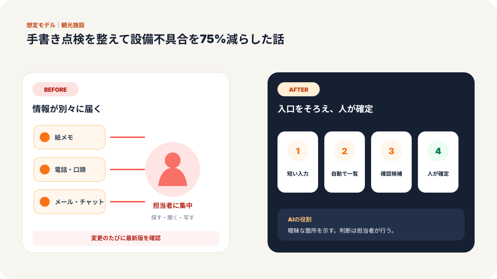
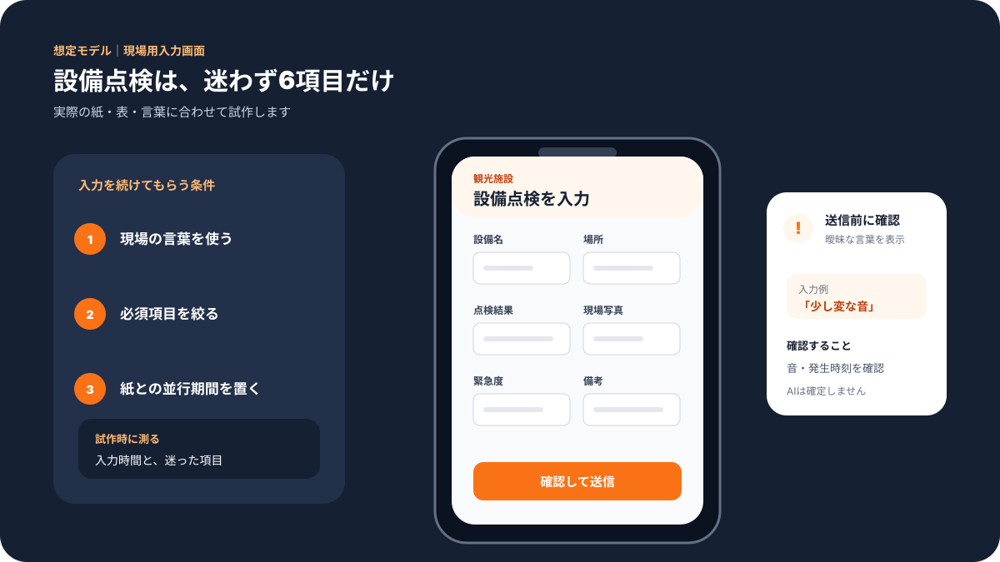
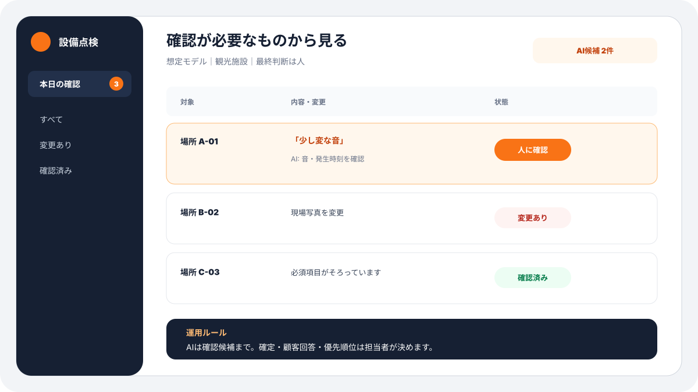
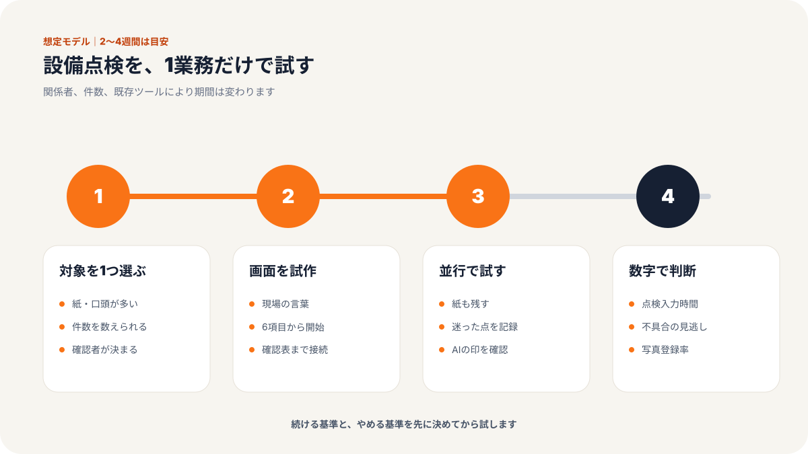
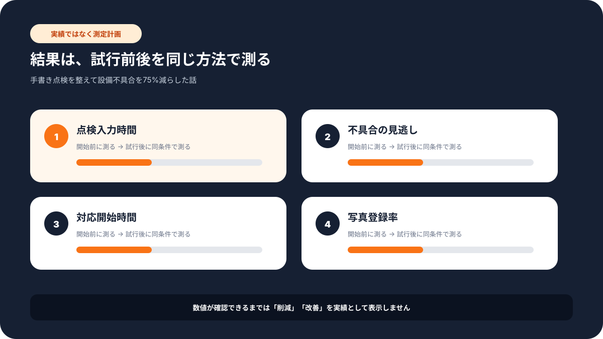

現場での使い方
この記事で変わる業務の流れ
「誰が入力し、誰が確認するか」までイメージできるよう、想定画面と導入手順をまとめています。





# 従業員18名の観光施設／手書き点検を整えて設備不具合を75%減らした話
> 農業・観光業 × 施設管理者 × 従業員18名の事例
福岡県飯塚市の観光施設では、施設管理者が毎朝と閉館前に点検を行っていました。
入口、通路、休憩スペース、トイレ、案内板、照明、遊具、駐車場。
点検する場所は多く、紙のチェック表に丸をつけて、気になる箇所は余白にメモを書く運用でした。
施設管理者の方は、最初にこう話していました。
「点検は毎日やっています。でも、あとで見返すのが大変なんです」
安全確認そのものはまじめに行われていました。
問題は、記録の残し方でした。
課題：点検しているのに、情報がつながらない
紙のチェック表は、現場では使いやすい面があります。
すぐ書ける。誰でも見られる。電源もいらない。
ただし、観光施設の安全管理では、あとで振り返れることが大切です。
どの場所で不具合が多いのか。
前回の修理から何日たっているのか。
雨の日に増える確認項目は何か。
同じ指摘が繰り返されていないか。
紙だけでは、この確認が難しくなります。
実際、この施設では点検に1日合計3時間ほどかかっていました。
さらに、設備不具合が月8件ほど見つかることがあり、対応が後手に回る場面もありました。
スタッフの方からは、こんな声が出ていました。
「昨日も同じ場所を見た気がするんですが、前回どう書いたか探せません」
「写真を撮っても、誰のスマホに入っているか分からなくなります」
点検はしている。
でも、点検結果が次の対応につながりにくい。
ここが一番の課題でした。
施策：入力する画面を作り、写真と点検結果を同じ場所に集めた
弊社が支援するなら、まず大きなシステムは作りません。
現場の人が毎日使えることを優先します。
今回のような施設点検では、Googleフォーム、スプレッドシートを自動で動かす仕組み、写真添付を組み合わせます。
専門的に言えばGoogle Apps Scriptですが、現場向けにはこう説明します。
「入力された内容を、自動で一覧表に並べる仕組みです」
ステップ1：点検項目を場所ごとに分ける
最初に、紙の点検表をそのままデータ化しません。
紙の表には、似た項目や、使われていない項目が混ざっていることが多いからです。
入口まわり。
通路。
トイレ。
休憩スペース。
屋外設備。
駐車場。
このように場所ごとに分け、各項目を「異常なし」「要確認」「至急対応」の3段階にしました。
ステップ2：写真を必ず同じ画面から添付する
これまで写真は、スタッフ個人のスマホに残っていました。
そのため、あとで確認するときに探す手間がありました。
新しい入力画面では、要確認または至急対応を選んだときだけ、写真添付欄を表示します。
「写真を撮る場所が決まっただけで、かなり楽です」
施設管理者の方はそう言っていました。
ステップ3：対応期限と担当者を自動で見えるようにする
点検結果が一覧に入るだけでは、まだ不十分です。
大事なのは、その後の対応です。
至急対応が選ばれたら、一覧表で赤く表示。
要確認は黄色。
対応済みになったら緑。
担当者と期限も同じ表に入れ、朝礼で確認できるようにしました。
これにより、点検と対応が別々の仕事ではなく、ひとつの流れになりました。
成果：点検時間は半分、設備不具合は月8件から2件へ
導入後、点検にかかる時間は1日3時間から1.5時間へ短縮されました。
紙を回収して、あとから転記する作業がなくなったためです。
また、設備不具合は月8件から2件へ減少しました。
問題が小さいうちに見つかり、対応期限が見えるようになったことが大きな理由です。
| 項目 | Before | After |
|------|--------|-------|
| 点検時間 | 1日3時間 | 1日1.5時間 |
| 設備不具合 | 月8件 | 月2件 |
| 写真確認 | 個人スマホから探す | 点検記録と一緒に確認 |
| 対応状況 | 口頭確認が中心 | 一覧表で担当・期限を確認 |
| 安全管理品質 | 担当者の記憶に依存 | 記録を見て判断 |
スタッフの方からは、こんな変化もありました。
「点検が早くなったというより、迷わなくなりました」
これは大事な変化です。
時間短縮だけでなく、確認の不安が減っています。
なぜ効果が出たか
理由は、AIや仕組みを大きく入れたからではありません。
毎日の点検を、あとで使える形に変えたからです。
紙の点検表は、その場では便利です。
でも、集計や振り返りには向いていません。
入力する画面を作り、写真を同じ場所に集め、対応期限を見えるようにする。
この3つだけで、現場の管理はかなり変わります。
さらに、蓄積された点検記録をAIに読ませれば、季節ごとに増えやすい不具合や、同じ場所で繰り返される注意点も見つけやすくなります。
ただし、最初からAIに判断させる必要はありません。
まずは、記録を残す。
次に、見えるようにする。
最後に、AIで傾向を見る。
この順番が現場では大切です。
横展開：観光施設以外でも使える
同じ考え方は、さまざまな現場で使えます。
宿泊施設なら、客室点検や清掃後チェック。
飲食店なら、厨房点検や衛生チェック。
介護施設なら、共用部の安全確認。
小売店なら、売場・バックヤードの設備確認。
どの業種でも、紙で点検している業務はたくさんあります。
その紙をいきなり全部なくす必要はありません。
まずは、よく見返す項目だけ入力画面に変える。
写真を同じ場所に集める。
対応状況を見えるようにする。
この小さな一歩で十分です。
導入時に注意したこと
このような点検の仕組みを入れるとき、最初から細かく作り込みすぎると現場で使われません。
たとえば、点検項目を50個も60個も並べると、入力するだけで疲れてしまいます。
そのため、最初は本当に確認したい項目に絞りました。
毎日見る項目。
週に1回でよい項目。
月に1回でよい項目。
この3つに分け、毎日の入力画面には必要な項目だけを出します。
また、写真も「何でも撮る」ではなく、要確認と至急対応のときだけ添付するルールにしました。
写真が多すぎると、あとで見る人が困るからです。
現場の方からは、導入前にこんな不安がありました。
「入力作業が増えるなら続かないと思います」
そこで、紙に丸をつける感覚に近い画面にしました。
選択肢を押すだけ。必要なときだけ写真を付ける。コメントは短くてよい。
このくらいまで簡単にして、初めて毎日の業務に入ります。
定着のポイント
定着させるには、管理者だけが便利になる仕組みにしないことが大切です。
点検するスタッフにもメリットが必要です。
たとえば、前回の写真が見られる。
対応済みかどうかが分かる。
同じ指摘を何度も口頭で説明しなくてよい。
このように、入力する人にも楽になる部分があると続きます。
さらに、朝礼で一覧表を見る時間を5分だけ作りました。
新しい仕組みは、作っただけでは使われません。
毎日の会話に入れることで、少しずつ現場の習慣になります。
小さく始めるなら
同じような施設で始めるなら、最初の対象はトイレ、入口、駐車場の3カ所だけでも十分です。
利用者からの問い合わせが多い場所、事故が起きると影響が大きい場所、スタッフが毎日必ず見る場所。
この3条件に当てはまる場所から始めると、効果を感じやすくなります。
いきなり全施設を変える必要はありません。
1週間だけ試し、入力が負担にならないか、写真の枚数が多すぎないか、朝礼で確認しやすいかを見る。
この試運転を挟むことで、現場から「これなら続けられそう」という声が出やすくなります。
気になる業務があれば、お気軽にお声がけください。
弊社では中小企業のAI活用・システム開発の伴走支援を行っています。